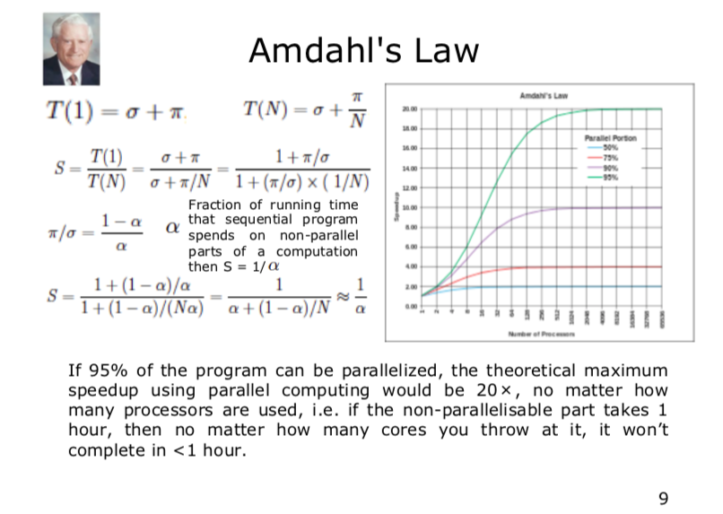
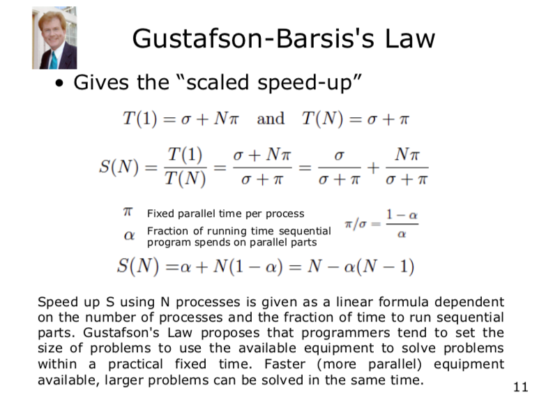

Distributed and Parallel Computing
Parallel Computing
Conceptions
speedup
speedup
- the proportion of the speed of parallel algorithm and serial algorithm
$$ S(N) = \frac{T(1)}{T(N)} $$
- T(1): time for serial computation
- T(N): time for parallel computation
- S(N): speed up
Amdahl's Law
##### Formula
$$ T(1) = \sigma + \pi $$
$$ T(N) = \sigma + \frac{\pi}{N} $$
$$ S(N) = \frac{T(1)}{T(N)} = \frac{\sigma + \pi}{\sigma + \frac{\pi}{N}} = \frac{1 + \frac{\pi}{\sigma}}{1 + (\frac{\pi}{\sigma}) * (\frac{1}{N})} $$
- $$ \frac{\pi}{\sigma} = \frac{1 - \alpha}{\alpha} $$
- $$ S(N) = \frac{1 + \frac{1 - \alpha}{\alpha}}{1 + (\frac{1 - \alpha}{N \alpha})} = \frac{W_s + W_p}{W_s + \frac{W_p}{p}} $$
- $$ \lim_{p->\infty} S(N) = \frac{W_s + W_p}{W_s} $$
- $$ W_s $$: proportion of serial
- $$ W_p $$: proportion of parallel
Overhead
The overhead is replicated as many times as the number of processors.
- overhead
- copy data to/from processors
- loop as serial
Conclusion
- increasing the number of CPUs does not help
- increasing the proportion of parallel can achieve the maximum speedup
Gustafson-Barsis's Law

Conclusion
- the speedup is proportional to the number of CPUs as long as there is enough parallelization
Flynn's Taxonomy
- Single Instraction, Single Data Stream (SISD)
- no parallelism
- obsolete
- Single Instraction, Multiple Data Stream (SIMD)
- fault tolerant architecture
- Multiple Instraction, Single Data Stream (MISD)
- image processing
- matrix calculation
- Multiple Instraction, Multiple Data Stream (MIMD)
- High Performance Computing
Approaches for Parallelism
Explicit and Implicit Parallelism
Implicit Parallelism
- supported by parallel languages parallelizing compilers
- identify parallelism
- schedule calculations
- place data
Explicit Parallelism
- supported by programmers
- decompose tasks
- map tasks to processors
- communicate inter-process
Hardware
Multi Threading CPU
- parallelisation by adding extra CPU
Multi Core
- multiple cores process data and perform computationas in parallel
- share cache
- issue of cache read/write performance
- cache coherence
- cache stalls (CPU not doing anything whilst waiting for caching)
Symmetric Multi Processing 对称多处理
- multiple processors connect to shared memory
- full access to I/O devices
- controlled by a single OS instance that treats all processors equally
- each processor executes different programs
- capable of sharing common resources (memory, I/O device, ...)
- processors can be connected in a variety of ways
- buses
- crossbar switches
- meshes
- program both for CPU and inter-processor communication
Non-Uniform Memory Access (NUMA) 非统一内存访问
- provides speed-up by allowing processors to access their own local memory faster than non-local memory
- Improved performance as long as data are localized to specific processes/processors
Operating System
- interleaved semantics
Compute Parallelism
- Processes
- Thread
Data Parallelism
- caching
Applications
- thread pool, lock, semaphore
- deadlock
- processes involved constantly waiting for each other
- livelock
- processes constantly change with regard to one another, but none are progressing
Message Passing Interface
- init
- finalize
- comm_size
- comm_rank
- send
- recv
Data
- big data
- distributed data
- distributed file system
Challenges
Network Reliability
- send data
- not arrive
- not in order
- corrupted
- unsecure network
- attack
- trojans, viruses
- homogeneous network
Latency
- not instant
Bandwidth
- finite
Topology Change
Many Administrators
- firewall change
- server reconfiguration
- access control
Transport Cost
Time
- clock
- Network Time Protocol
Strategies
Design
Partitioning
- decompose computational activities and data
Communication
- coordinate among tasks
Agglomeration
- evaluate performance and cost
- group into larger tasks to improve communication
- bundle individual communication
Mapping/Scheduling
- Assigning tasks to processors
Model
Master Worker / Slave Model
- decompose the problem into small tasks
- distribute to workers and gather partial results
- different levels of granularity
Single-Program Multiple-Data
- each process executes the same piece of code on different parts of the data
- data is split among the available processors
- data splitting and analysis can be done in many ways
Data Pipeline
- suitable for applications involving multiple stages of execution
Divide and Conquer
- split
- compute
- join